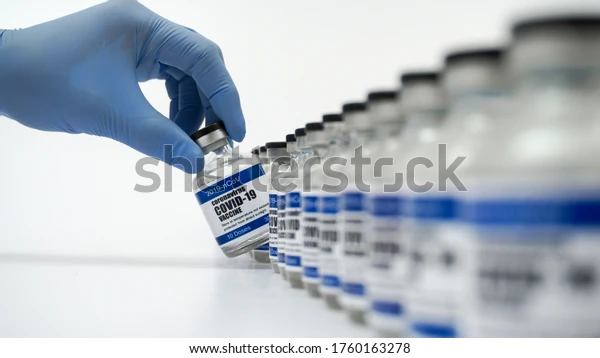

백신 소개
예방접종
-
예방접종은 인체의 면역 체계를 훈련시켜 코로나19 바이러스를 인식하고
제거하도록 합니다.
-
예방접종은 우리 몸이 코로나19에 걸리지 않고 면역을 획득할 수 있는
안전한 방법입니다.
-
다양한 종류의 백신이 있지만, 모든 백신은 결국 우리 몸의 면역세포가
바이러스를 구성하는 일부 단백질 부분을 인식하고 반응하여 항체를
만들어 내고, 면역 세포 중 일부는 기억 세포로 남습니다.
-
이후 인체에 코로나19 바이러스가 침입했을 때 활성화되어 바이러스나
바이러스에 감염된 세포를 제거합니다.
-
이러한 기전으로 코로나19 예방접종은 코로나19 감염의 위험을 줄여주고,
중증 환자발생이나 사망을 예방합니다.
-
예방접종 후 면역을 획득하기까지 통상 2주 이상이 소요되므로 예방접종
직후에는 코로나19 바이러스에 노출되어 코로나바이러스감염증-19에 걸릴
수 있습니다.
-
예방접종 후에 면역 형성과정에서 발열, 피로, 두통, 근육통,
메스꺼움ㆍ구토 증상이 나타날 수 있으나, 이는 정상 반응으로 볼 수
있습니다. 대부분 3일 이내에 증상이 사라지게 됩니다.
코로나19 백신의 종류
- 현재 여러 가지 종류의 백신이 개발되었거나 개발 중에 있습니다.
-
대부분의 코로나19 백신은 코로나바이러스의 ‘스파이크’ 단백질을 이용해
면역반응을 일으킵니다.
-
우리 몸의 면역체계가 코로나바이러스의 스파이크 단백질을 이물질로
인식하여 오래 지속되는 면역 세포와 항체를 만들어 냅니다.
-
예방접종을 완료하고 면역이 형성된 이후 코로나바이러스에 노출되면,
우리 몸은 더 빠르고 더 나은 반응을 일으켜
코로나바이러스감염증-19로부터 우리몸을 보호합니다.
-
현재까지 개발되거나 곧 개발될 코로나19 백신은 크게 3가지 종류로
나눠집니다.

-
- mRNA백신(핵산백신)
-
mRNA백신은 코로나바이러스 특이 스파이크 단백질을 만드는 유전자를
RNA형태로 만들어 우리 몸에 투여하는 백신입니다. 인체에 주입된
mRNA는 우리 몸의 세포에서 코로나바이러스 특이 스파이크 단백질을
만들게 됩니다. 우리 몸은 만들어진 스파이크 단백질을 이물질로
인식해서 면역반응을 일으키게 되고, 코로나19 바이러스에 대항하는
면역을 획득하게 됩니다. 주입한 mRNA 백신의 유전물질은
분해되므로, 인체의 DNA와 상호작용하지 않습니다.
-
- 재조합백신
-
재조합백신은 코로나19 바이러스의 무해한 단백질 항원(주로
스파이크 단백질)을 포함하고 있습니다. 예방접종을 하면, 인체의
면역체계는 단백질 항원을 이물질로 인식하여 면역반응을 일으키게
되고, 코로나19 바이러스에 대항하는 면역을 획득하게 됩니다.
-
- 바이러스벡터 백신
-
바이러스벡터 백신은 코로나19 바이러스 특이 단백질(주로 스파이크
단백질)의 유전 물질을 포함한 바이러스로 만들어 집니다. 이때
사용되는 바이러스는 코로나19 바이러스와는 다른 바이러스로,
약독화된 바이러스를 사용하므로 인체에는 무해합니다. 코로나19
바이러스 특이 단백질의 유전물질을 포함한 벡터 바이러스가 인체에
들어오면, 코로나19 바이러스 특이 단백질인 스파이크 단백질이 우리
몸에서 만들어집니다. 우리 몸은 만들어진 스파이크 단백질을
이물질로 인식해서 면역반응을 일으키게 되고, 코로나19 바이러스에
대항하는 면역을 획득하게 됩니다.
접종률